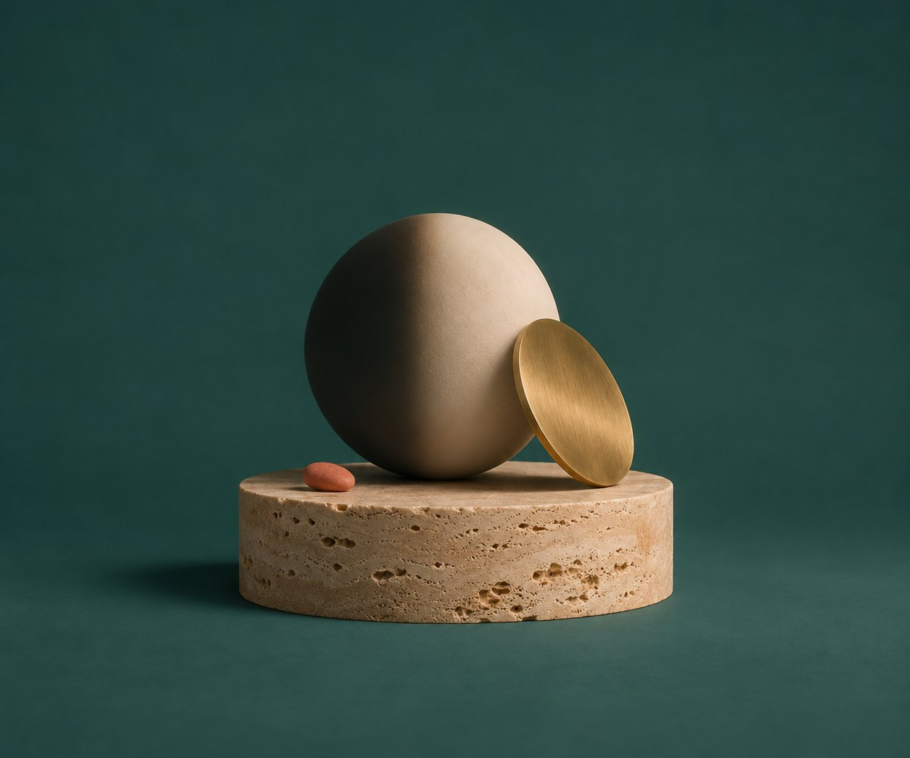
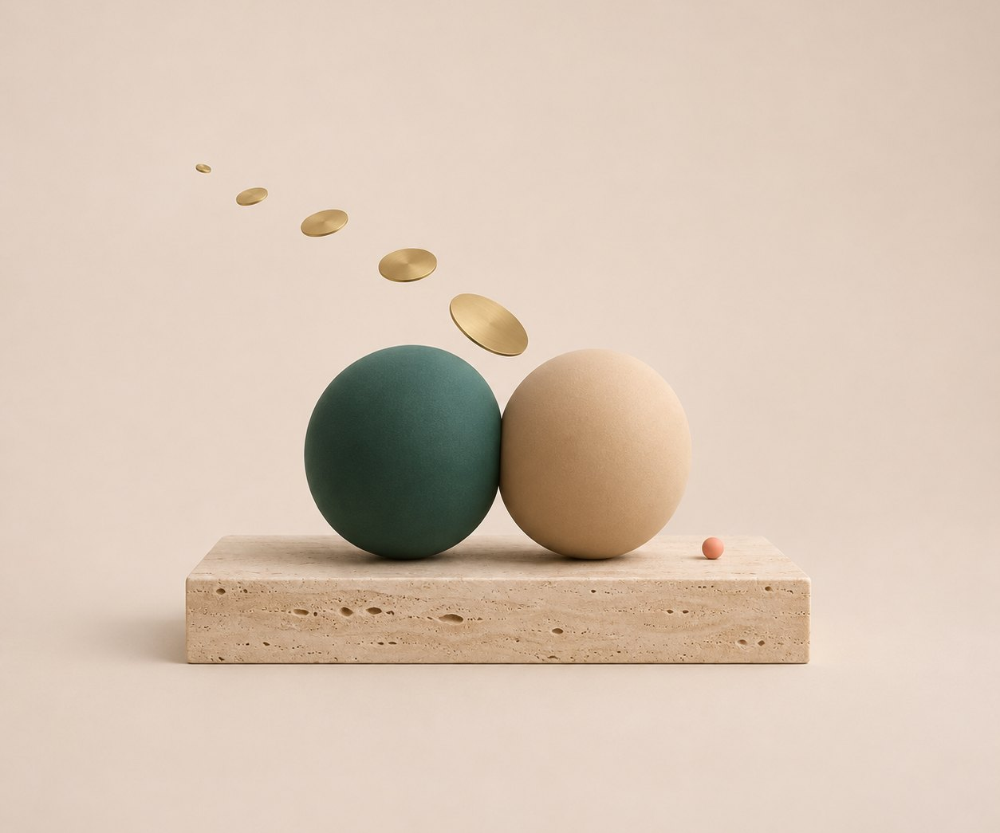
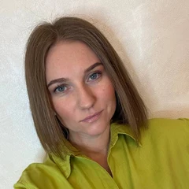
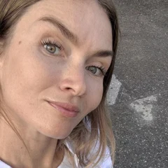
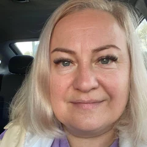

Как за 4 дня выйти из угнетающих чувств на новый уровень дохода, энергии, отношений, реализации
Эфир 1 из 4
«Спусковой крючок» или «Секрет больших денег»: убираем тревогу, страх, обиду, вину и стыд

основатель Института психического здоровья

Смотреть нужно на все сферы сразу
Деньги, отношения, здоровье, реализация, предназначение и энергия связаны между собой. Закрываете одну дыру – открывается другая.

Анна Таскаливна Саба
Врач-психиатр и психотерапевт
Образование:
- Московская медицинская академия им. И.М. Сеченова
- НМИЦ психиатрии и наркологии им. В.П. Сербского
- Факультет непрерывного медицинского образования РУДН
Основатель Института психического здоровья
лет опыта
консультаций
выпускников института
Ваш путь
 01
01- Убираем тревогу, страх, обиду, вину, стыд
- Находим затык, который годами держал на месте
Прошлое больше вас не беспокоит
 02
02- Находим, куда утекали силы, и перекрываем утечки
- Ставим предохранители от откатов
Сил хватает на всё, откатов нет
 03
03- Проверяем цель на истинность
- Убираем сопротивление и саботаж
Пошаговый план: подумали – сделали
 04только для VIP тарифа
04только для VIP тарифа- Переходим в состояние, где всё даётся легко
- Возможности начинают находить вас сами
Вы в состоянии «мне везёт»
За каждый эфир вы получаете новый подарок

1«Соединение с деньгами через тень»
«Деньги, предназначение, проявленность, реализация»
 2
2 3
3Практику проведет Михаил Саба

4Совместный эфир Анны и Михаила Саба, совместная практика

Будьте сегодня до конца – и заберёте записи 2-х терапевтических сессий
проявленность,
реализация»

Была ли у вас мысль сменить сферу?

Закройте глаза и вспомните: о чём вы мечтали в 20 лет?
Какой вы видели свою жизнь, работу, отношения, доход.
А теперь откройте глаза и посмотрите на свою реальность.

Совпадает ли картинка? Что вы сейчас чувствуете?

Допустим, вы получили дельный совет, как заработать больше денег
Грамотный человек в вашей сфере посмотрел на вас, понял, что вы хороший эксперт, и порекомендовал вам поднять цены на свои услуги, т.к. это для вас самый быстрый способ выйти на новый уровень дохода
И вы, возможно, давно уже носите эту мысль в голове
Поднимите чек на свои услуги и будете зарабатывать больше
ФАКТ: этот совет работает всегда, если вы оказываете услуги людям. Многим из вас даже не нужно растить компетенции: вы и так компетентны.
Но дальше происходит самое интересное...

Допустим, работа не приносит вам ни морального, ни финансового удовлетворения
Выматывает и энергетически, и физически. А платят немного.
Вас давно тянет в другую сферу (например, стать психологом)
Подруги звонят вам за советами и потом благодарят, вы легко разруливаете их проблемы
Даже незнакомые люди быстро вам открываются: вы добрый и эмпатичный человек

Где вы можете испытывать вину и стыд?
2 части вас: одна не хочет содержать маму, другая думает, что должна это делать
Вина и стыд перед мамой (родными), если вы зарабатываете много
Какой ещё долг вы должны отдать родителю за жизнь?
Это нарушение законов системы: назад энергия не течёт. Если вы спасаете родителей, то у вас не будет ни денег, ни нормальной личной жизни.

Что вы выбираете?
Жить как сейчас, ограничиваясь в финансах, с ощущением, что живёте не свою жизнь.
Или попробовать?
Напишите в чате.
Дальше расскажу, как повысить вероятность успеха при смене профессии до максимума.

Как он может быть против того, чего хотите вы?
Он ваш отец?
Он решает, что вам можно, а что нет?
Если у вас ещё и финансовая зависимость от мужа, то вы ощущаете себя в оковах, без голоса и мнения. И это чувство будет только усиливаться с годами.

За этим стоит «я недостаточна ...»
Ощущение недостаточности, низкая самооценка, неуверенность в себе.
На курсе ПКТ (психолог краткосрочной терапии), куда вы можете выиграть грант от 50 до 200 тыс. руб. (кнопка под видео), я даю все инструменты для того, чтобы вы стали высококлассными специалистами.
Если вы владеете самыми лучшими и эффективными инструментами, которые помогают вашим клиентам, вы всегда будете востребованным специалистом в своей сфере.

«Я долго не могу пробить финансовый потолок. Много лет хожу словно по кругу, а если деньги приходят, то быстро утекают. Что делать?»

Вместе сейчас пройдём тест ТДО
вопросов
пишите в чат ДА или НЕТ
посчитайте, сколько у вас баллов, и напишите в чат
Тело - наш главный индикатор, оно никогда не врёт
Тело сразу даёт реакцию: глаза, голова, тошнота, слёзы, жар
Саботаж виден сразу: нужна концентрация, «отсидеться» не получится
Домашних заданий нет: мозг сам дорабатывает, как заживает ссадина
Рекомендован ВОЗ как самый быстрый и эффективный метод проработки травм


Удобно всем, кроме клиента
Дёшево и легко научиться
Результат долгий: клиент ходит годами
Чтобы всё понять, ответьте на вопрос:
«Выгодно ли фарм компаниям делать так, чтобы люди были здоровы?»
Выгодно ли психологу, работающему за 3-5 тысяч рублей, у которого семья, ипотеки и кредиты, чтобы вы быстро решили все свои вопросики?
Как зарабатывают наши выпускники

былоПрактикующий психолог, упёрлась в финансовый потолок
сталоКупила ещё одну квартиру, запись на месяц вперёд

былоПрактикующий психолог, хотела больше практики
сталоСтала увереннее, чек вырос до 30 000 ₽

былоИнженер-конструктор, не понимала, куда дальше
сталоДоп. доход от консультирования, ремонт за 7 млн
былоДекрет, развод, дохода нет
стало100 000 ₽ через 2 месяца, 250 000 ₽ через 6

былоДоход 0 ₽, страх за будущее
сталоНовая профессия с нуля, стабильный поток клиентов

былоНакоплений 0 ₽, впереди долг 1 млн
сталоНакопила 500 000 ₽, повысила чек

Кто чаще всего приходит в профессию психолога?
- 1
Вы легко контактируете с людьми, они быстро и легко вам открываются и доверяют
- 2
Вы очень хорошо видите со стороны, что нужно изменить человеку, чтобы прийти к результату
- 3
Вы ясно смотрите на ситуацию и можете дать дельный совет, и люди потом вас за это благодарят

Первично человек приходит разобраться со своими запросами и убрать свои травмы.
И только тогда он может помогать другим.
И наша программа именно так и устроена.

Перед тем, как вы получите бонусы первого эфира, и перед тем, как мы проведём практику,
я хочу вам показать студентку курса ПКТ Регину
И речь пойдёт не о деньгах, сколько она зарабатывает, а о том, как ДПДГ творит чудеса с другими запросами клиентов и с другими сферами жизни клиентов.

Личная диагностика с Региной и специалистами её уровня
Студенты института разложат вашу ситуацию комплексно и покажут, как вам придти к своим выдающимся результатам. Кнопка для записи на VIP-тариф – под видео.

«Бесконечный поток»
Находим, куда сливался ресурс
Перекрываем утечки
Восстанавливаем силы
Ставим предохранители от откатов
Бонус для тех, кто будет онлайн: вебинар из курса «Деньги 2.0»
Заберите бонусы первого эфира
проявленность,
реализация»